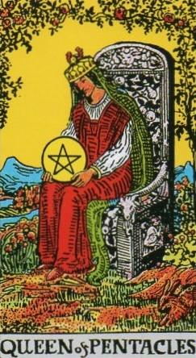
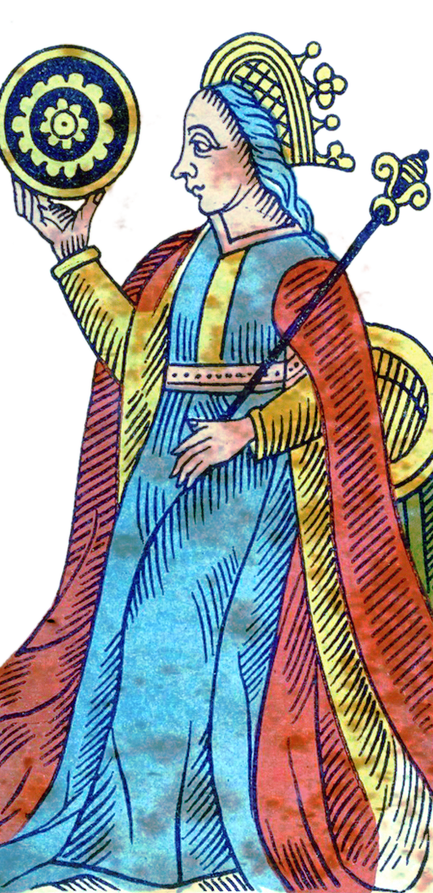
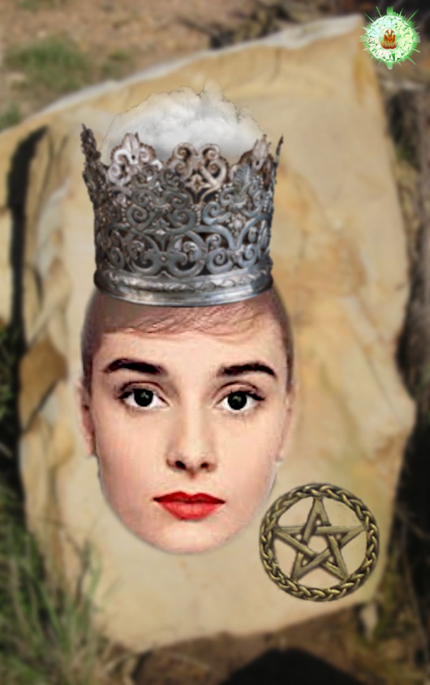
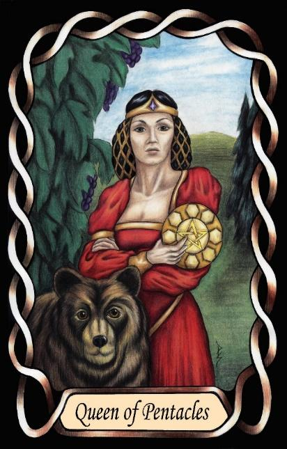

Queen of Pentacles
The Healer / Dreamer (INFP – FiNe)




Queen |
Idealist: Abstract Collaborative |
|||
Practical |
||||
Extroverted iNtuition Introverted Feeling |
||||
4.4% of population |
||||
Examples: Audrey Hepburn, Sinéad O’Connor |
||||
Meaning of Life: Imagination |
||||
Astrology: Virgo (Female side) |
||||
Queens of Pentacles are deeply compassionate people. They care about the suffering of individuals, and about humanitarian causes in particular. Their empathy is grounded in personal values, and they feel a quiet responsibility to ease the burdens of others.
Being based in feelings and abstract intuition, they show little interest in logic or detail. Their attention is drawn instead to inner meaning, symbolism, and the emotional lives of the people around them. They understand others not through analysis, but through resonance — by sensing what matters to them.
As Idealists in an Earth suit, they express their compassion in practical, tangible ways. They help by creating stability, offering comfort, and tending to the small needs that make life gentler. Their care is quiet, steady, and deeply personal.
They can often be seen as living in a dream world, rich with symbolism, ideals, and imagined possibilities, but always trying to help others as they would like to be helped.